BINARY NINJA / ANIMATED ENERGY PAYLOAD · 16 OCTOBER 2026Actual production-mode browser captures. Public custom multiplayer + full DEADLOCK physical solve. No gameplay-state injection.
Free heartbeat → carried purple → docking surge → green powered heartbeat → purple removal. Fixed crop of the game canvas, normal speed. Playback is opt-in; no autoplay.
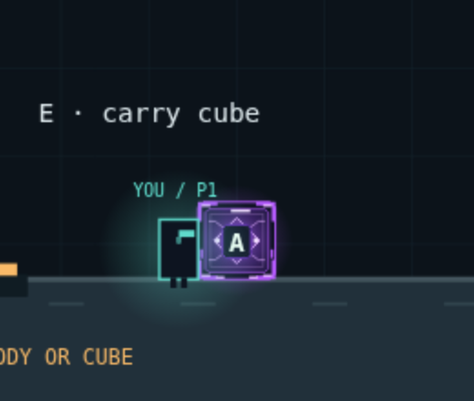
Violet frame, lavender highlights and a continuous layered heartbeat.
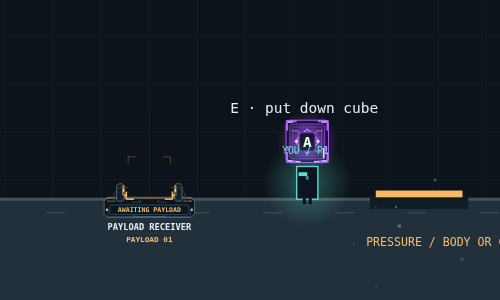
Purple energy follows the actual 44-unit body.
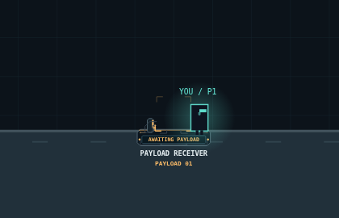
A grounded player leaves the compact receiver amber.
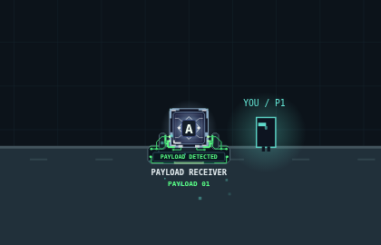
Accepted contact: the purple payload begins a 680 ms transition to green.
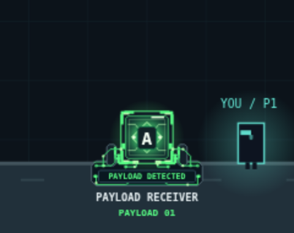
Branching traces connect to open terminals; cargo remains removable.
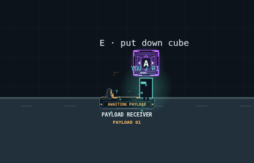
Purple returns immediately. Receiver circuitry shuts down to amber.
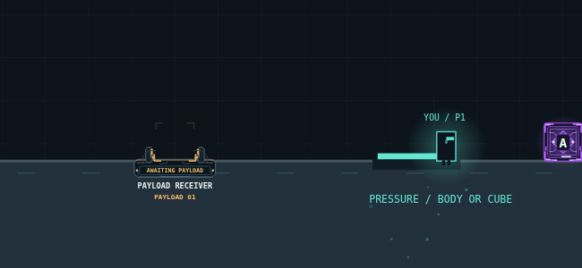
The ordinary pressure plate continues accepting players.
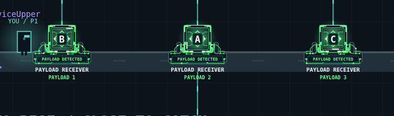
Authored-start physical solve, including the final hatch catch.
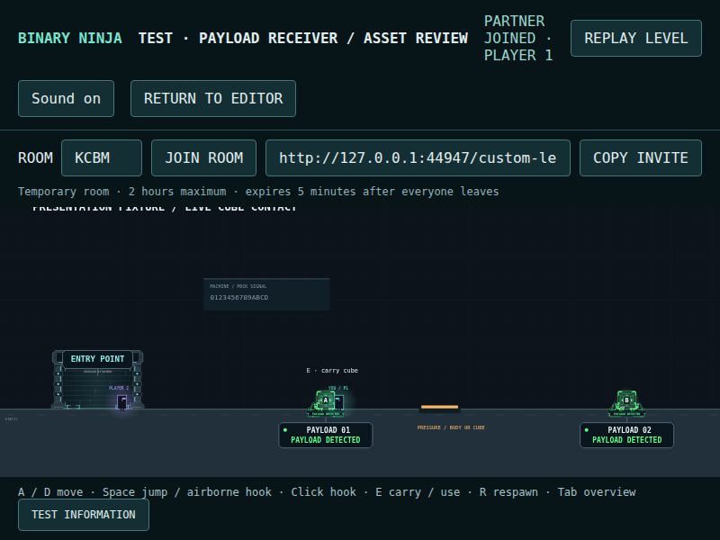
800 × 600 client. Colour, frame shape and status text work together.
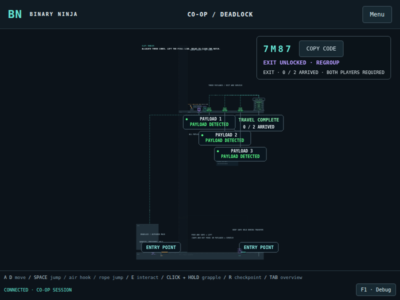
Three green cargo interfaces remain distinct from static architecture.
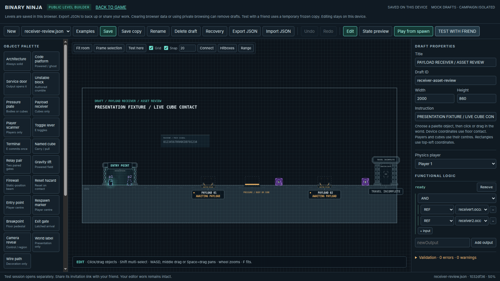
The same renderer is used in the editor and physics preview.
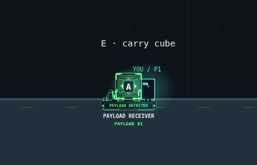
A live OS preference change settles a clear, static green state.
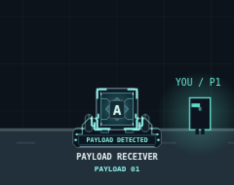
Committed 5f3e815 asset. The compact shape and canonical alignment are retained.
Stronger colour separation, layered energy contours and branching circuit traces.